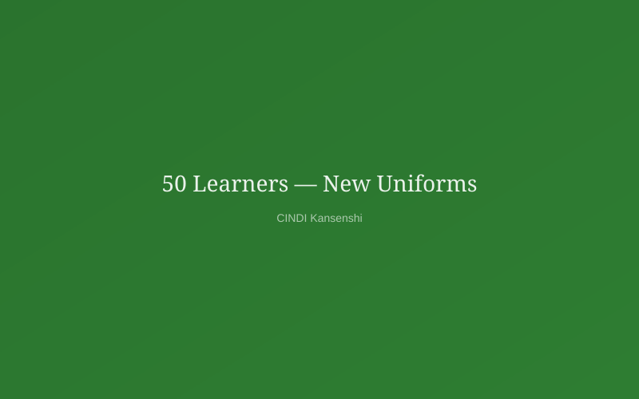
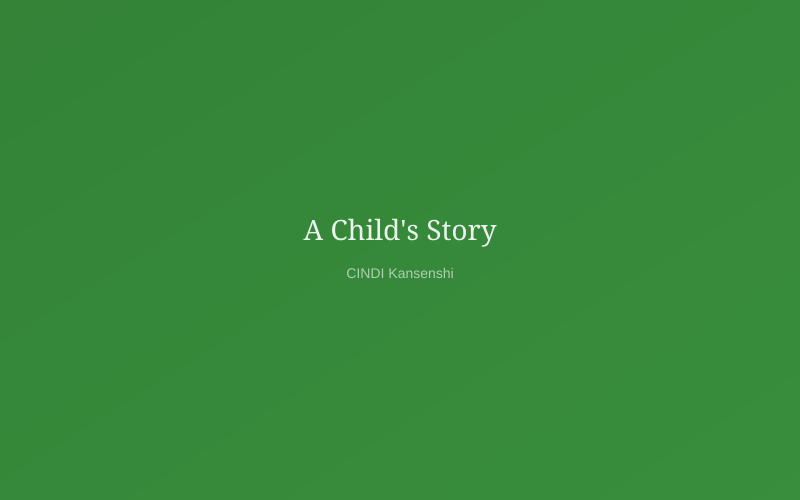

50 Learners Receive New School Uniforms Ahead of Term 2
Thanks to a partnership with a local business, 50 of our children began Term 2 in brand-new uniforms...
Read moreCINDI Kansenshi walks alongside orphaned and vulnerable children — funding their education, feeding their bodies, and restoring their dignity.
"We believe no child's future should be determined by circumstances of birth. Every child in Kansenshi carries potential — our job is to protect it."
— CINDI Kansenshi Board of TrusteesSchool fees, uniforms, books, and after-school tutoring for every enrolled child.
Learn moreDaily hot meals at our centre plus monthly food packages for vulnerable households.
Learn moreClinics, psychosocial support, HIV counselling and wellness check-ups.
Learn moreCaregiver skills training and small income-generating business support.
Learn more
Grace was 9 when she first walked through our gates — no shoes, no school bag, and three months behind on fees. Today she is a top student at Kansenshi Primary, dreaming of becoming a doctor.
Stories like Grace's are why we show up every morning. Behind every statistic is a name, a face, and a future worth fighting for.
Read More Stories